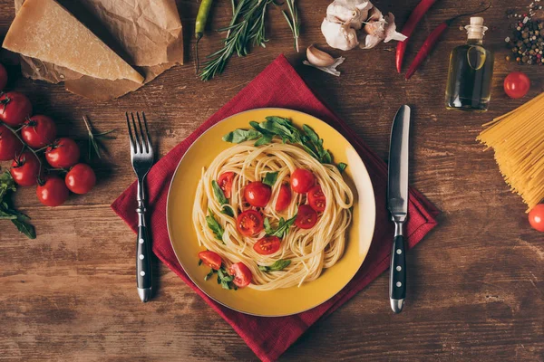
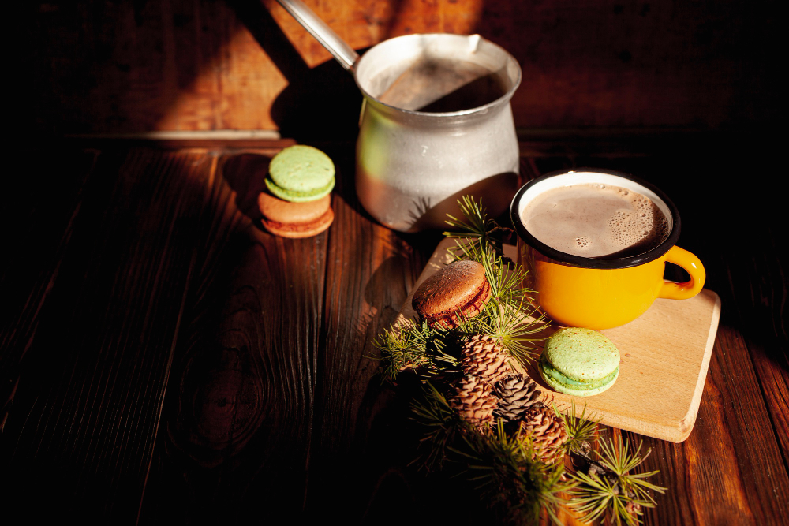

Ласкаво просимо до Coffee Time!
У Coffee Time, ви можете добре провести свій час, насолодитися кавою, скуштувати тортик або просто посидіти зі своїми найліпшими друзями! Наші бариста завжди раді поділитися з вами секретами приготування смачних напоїв, а свіжоспечені десерти створюють атмосферу тепла та затишку. Тут завжди панує дружня атмосфера, що надихає на розмови й відпочинок. Запрошуємо вас у наш світ кави, де кожен момент стає особливим, а кожен ковток — справжнім задоволенням!
Великий асортимент на будь який смак!
Тут ми дбаємо про те, щоб кожен гість знайшов щось на свій смак. У нашому асортименті — ароматна кава з різних куточків світу, класичні й авторські напої, що здивують навіть найвибагливіших поціновувачів. До кави — свіжа випічка, ніжні десерти, круасани, тістечка та тортики, приготовані з любов’ю нашими майстрами. А якщо хочеться чогось ситнішого — смачні сніданки, сендвічі та легкі салати стануть ідеальним вибором. Ми постійно оновлюємо меню, щоб дивувати вас новими смаками та поєднаннями. Тут кожна страва — не просто їжа, а частинка турботи й натхнення.
Якість обслуговування на вищому рівні!
Наш персонал — це серце закладу. Привітні, уважні та професійні, вони завжди готові подбати про ваш комфорт і гарний настрій. Наші бариста майстерно готують напої, дотримуючись найвищих стандартів, а офіціанти швидко й чемно обслуговують кожного гостя. Ми цінуємо ваш час, тому працюємо злагоджено та оперативно, щоб ви могли насолоджуватися кожною хвилиною перебування в нашому закладі. Тут вас завжди зустрінуть з усмішкою й щирістю, адже ми працюємо з любов’ю — до своєї справи й до людей.
Наша приємна атмосфера!
У цьому місці панує особлива атмосфера, що огортає теплом і спокоєм з перших хвилин. М’яке освітлення, стильний інтер’єр та легка джазова музика створюють ідеальний простір для відпочинку, натхнення чи приємної розмови. Тут приємно сховатися від міської метушні, загорнувшись в аромат свіжозмеленої кави та відчуття затишку. У нас зручно працювати з ноутбуком, читати улюблену книжку або просто мріяти, спостерігаючи за світом крізь вікно. Кожна деталь — від зручних крісел до посмішки персоналу — продумана так, щоб ви могли повністю розслабитися й насолоджуватися моментом. Coffee Time — це не просто кав’ярня, це місце, де добре бути собою.
Кава

Лате
75₴
10 хв
Лате — це кава, приготована з еспресо та великої кількості гарячого молока, що створює м'який, кремовий смак. Лате часто подається з тонким шаром молочної пінки зверху, що додає легкості напою. Час приготування — 10 хвилин.
До кави

Панкейки з ягодами та варенням
105₴
30 хв
Панкейки готуються на основі молока, яєць і борошна, обсмажуються на сковороді та подаються з ягідним соусом і ложкою маскарпоне. Час приготування — 30 хвилин.
Як зробити замовлення?
Хочу викликати офіціанта
Просто натисніть на дзвіночок у вас на столі
Хочу майбутнє замовлення
Щоб зробити попереднє замовлення, зв’яжіться з нами за телефоном, вказаним нижче, або скористайтеся іншими контактними даними. Також у нас є Telegram-бот, який приймає ваші замовлення. Усе це ви знайдете у вкладці “Контакти”. Наші працівники швидко й оперативно приймуть ваше замовлення та приготують його точно на той час, який ви вкажете.
Кіра
Кіра — відповідальна та організована менеджерка, яка завжди в курсі всіх процесів і легко справляється з багатозадачністю. Завдяки аналітичному підходу вона ефективно керує командою, підтримує позитивну атмосферу та забезпечує безперебійну роботу всіх відділів. Постійно на зв’язку з клієнтами, вона уважно слухає, враховує їхні потреби й допомагає знаходити найкращі рішення. Її вміння швидко адаптуватися до змін, знаходити оптимальні шляхи вирішення завдань, надихати команду та мотивувати колег роблять її незамінною частиною нашої команди! Завдяки щирості, відкритості та дружньому підходу вона створює комфортну атмосферу для гостей і співробітників. Якщо вам потрібно щось уточнити або вирішити питання — наша менеджерка завжди відкрита, привітна й рада допомогти!
Дар'я
Даша — майстриня своєї справи, яка вміє готувати з душею, вкладаючи в кожен рецепт частинку тепла й любові. Її кулінарні навички здивують навіть найвибагливіших гурманів: вона уважна до кожного інгредієнта, ретельно добирає продукти й гарантує бездоганний смак кожної страви. Даша не просто готує — вона створює атмосферу затишку та радості, де кожна страва стає особливою. Завдяки своєму таланту й натхненню вона перетворює звичайні продукти на справжні гастрономічні витвори, які залишають приємні спогади. Вона щира, відкрита й завжди заряджає оточення позитивом, створюючи теплу та доброзичливу атмосферу навколо себе.
Ілля

Ілля — талановитий бариста, який щоранку заряджає гостей енергією та хорошим настроєм. Його любов до кави відчувається в кожній чашці: він майстерно поєднує класику з авторськими рецептами, створюючи напої з неповторним смаком. Ілля завжди уважний до деталей: добирає ідеальний помел, температуру та спосіб подачі, аби кожен гість отримав свою особливу кавову історію. Він не просто готує каву — він передає через неї свою пристрасть і майстерність. Ілля охоче ділиться знаннями, радить нові смаки та допомагає обрати напій, що підходить саме вам. Його щира посмішка, легкість у спілкуванні та вміння створити невимушену атмосферу роблять кожне відвідування кафе теплим і приємним. Завдяки Іллі наш заклад — це місце, куди хочеться повертатися знову і знову.
Вероніка
Вероніка — досвідчений кондитер, яка завжди прагне створювати смачні, гармонійні та вишукані десерти. Її увага до деталей і щира любов до кулінарії дозволяють не лише готувати смачно, а й створювати справжню естетику в кожному виробі. Вероніка майстерно випікає найрізноманітніші солодощі, надаючи кожному з них унікальний характер і нотку натхнення. Вона із задоволенням допомагає гостям обрати найкраще з меню, дбайливо підбираючи ідеальне поєднання смаків. Вона — не лише професіонал своєї справи, а й людина з відкритим серцем. Її доброзичливість і щирість створюють атмосферу тепла й комфорту, а позитив і почуття гумору роблять спілкування з нею незабутнім. Завжди відкрита до розмови, вона наповнює простір навколо добротою і світлом.
Поліна
Поліна — справжній експерт своєї справи, яка щодня прагне забезпечити найвищий рівень сервісу й перетворити кожен візит гостей на унікальний та незабутній досвід. Вона уважна до найменших деталей, завжди знаходить індивідуальний підхід і точно знає, як подарувати приємні емоції. Поліна добре обізнана з меню, постійно слідкує за оновленнями та із задоволенням допомагає обрати найкраще — з урахуванням смаків і побажань кожного гостя. Її доброзичливість, чуйність і щире бажання допомогти створюють особливу атмосферу затишку, в яку хочеться повертатися знову. Завдяки її професіоналізму та турботливому ставленню кожен відвідувач почувається важливим, бажаним і по-справжньому цінним гостем.
Богдан
Богдан — надійний і відданий своїй справі професіонал, який щодня докладає максимум зусиль, щоб зробити свою роботу не просто добре, а на відмінно. Він завжди готовий брати на себе відповідальність, швидко знаходить рішення навіть у складних ситуаціях і не боїться викликів, адже саме вони мотивують його рости та вдосконалюватися. Завдяки глибоким знанням і досвіду Богдан вміє бачити картину в цілому, залишаючись уважним до деталей. Його підхід базується на точності, продуманості та щирій зацікавленості в результаті. Він завжди відкритий до нових ідей, готовий вислухати й підтримати, а його впевненість та спокій заряджають команду позитивом. З Богданом легко співпрацювати — він чесний, прямий і водночас дипломатичний. Його вміння зберігати баланс між людяністю та професійністю створює атмосферу взаємоповаги й довіри, завдяки чому кожен поруч відчуває себе частиною чогось важливого й цінного.
- Ми — простір для кавових моментів і теплих зустрічей.
- Об'єднуємо любов до кави, затишку та щирості.
- Працюємо з 2023 року — і з кожним днем стаємо кращими.
- Віримо, що кава — не напій, а настрій.
- Нас надихає кожен гість, що повертається.
- Якість у кожній чашці та кожній страві.
- Привітність і людяність — основа сервісу.
- Чесні інгредієнти, жодних компромісів.
- Турбота про клієнта — понад усе.
- Підтримуємо локальних постачальників і фермерів.
- Власна обсмажка кави з унікальним профілем смаку.
- Меню, яке змінюється разом із сезоном.
- Теплий інтер’єр з елементами хендмейду.
- Атмосфера, де хочеться залишитися надовго.
- Бариста, які не просто готують — а створюють настрій.
Працевлаштування
Як влаштуватися до нас?
- Підготовте резюме.
- Надішліть на email.
- Зателефонуйте для підтвердження.
- Пройдіть співбесіду.
- Починайте роботу в нашому колективі.